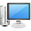
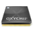

Alte Hardware
 Immer wieder angefragt werden Hinweise zum Betrieb von Ubuntu auf älterer oder auch obsoleter (Sperrmüll-) Hardware. Bei Beachtung einiger Grundregeln lassen sich ältere Geräte "recyclen" bzw. weiternutzen und man leistet einen aktiven Beitrag zur Vermeidung von Elektronikschrott.
Prinzipiell wird der mögliche Verwendungszweck eines Rechners durch vier Faktoren bestimmt:
Prozessor
Arbeitsspeicher (RAM)
Festplatte
Anwendungen
Um die Lektüre dieses Artikels etwas abzukürzen: Desktop-Rechner der Pentium IV-Generation oder neuer können problemlos mit Ubuntu genutzt werden, wenn man für ausreichend Arbeitsspeicher sorgt. Damit ist Linux eine Alternative für ältere Rechner mit Windows XP, das bis April 2014 unterstützt  wurde. Allerdings sollte man den Stromverbrauch berücksichtigen. Leider kann inzwischen auch eine zu alte Grafikkarte dafür sorgen, dass ein Rechner mit Ubuntu nur eingeschränkt nutzbar ist (siehe Problembehebung).
wurde. Allerdings sollte man den Stromverbrauch berücksichtigen. Leider kann inzwischen auch eine zu alte Grafikkarte dafür sorgen, dass ein Rechner mit Ubuntu nur eingeschränkt nutzbar ist (siehe Problembehebung).
Möchte man dagegen ein älteres Notebook weiterverwenden, ist der Prozessor aufgrund der PAE-Problematik der limitierende Faktor. Empfohlen wird die LTS-Version 14.04 (oder 14.04.1) in den offiziellen Varianten Lubuntu oder Xubuntu. Zu den Details siehe nächster Abschnitt.
Prozessor¶
 Von diesen vier Faktoren ist der Prozessor unter Linux relativ unkritisch. Allerdings muss aus Geschwindigkeitsgründen allgemein von CPUs der Fa. Intel wie Pentium, Pentium II oder Pentium III bzw. vergleichbaren Prozessoren abgeraten werden. Ab Ubuntu 12.04 wird ein entsprechend leistungsstarker Prozessor der Klasse Pentium 4 oder neuer benötigt.
Hinweis:
Besitzer älterer Rechner sollten folgendes beachten:
bereits ab 2010 werden bestimmte ältere Prozessoren nicht mehr unterstützt.
ab Ubuntu 12.04 gelten weitere Einschränkungen. Betroffen sind insbesondere Notebook-Prozessoren ohne PAE wie beispielsweise der Pentium M.
ab Ubuntu 12.10 werden CPUs ohne PAE grundsätzlich nicht mehr unterstützt! Dies betrifft alle Ubuntu-Varianten.
ab Ubuntu 14.04 werden zumindest die fehlerbehafteten Varianten des Pentium M bzw. Celeron M unterstützt, welche zwar PAE-fähig sind, dies aber nicht anzeigen. Die Bootoption
forcepaeschafft bei diesen Prozessoren Abhilfe.
Arbeitsspeicher¶
 Der für den Linux-Einsatz entscheidende Faktor heißt Arbeitsspeicher (RAM): je mehr, desto besser! Sollte sich der Arbeitsspeicher aufrüsten lassen, ist dieser Punkt wichtiger als die Frage nach anderen Hardware-Komponenten oder nach einer geeigneten Ubuntu-Variante bzw. Linux-Distribution.
Der für den Linux-Einsatz entscheidende Faktor heißt Arbeitsspeicher (RAM): je mehr, desto besser! Sollte sich der Arbeitsspeicher aufrüsten lassen, ist dieser Punkt wichtiger als die Frage nach anderen Hardware-Komponenten oder nach einer geeigneten Ubuntu-Variante bzw. Linux-Distribution.
Generell gilt: Die großen Desktop-Umgebungen wie Unity, GNOME 3 und KDE kommen erst ab 1 GiB RAM oder mehr in Frage. Bei 512 MiB RAM heißen die Alternativen Xubuntu und Lubuntu (MATE entspricht ungefähr Xubuntu). Bei allen dreien handelt es sich um eigenständige Desktop-Umgebungen.
Bei noch weniger RAM (ab 256 MiB) ermöglichen sog. Fenstermanager (auch als Window-Manager bzw. WM bezeichnet) die Nutzung älterer Hardware, auch wenn sie nicht den Komfort einer vollständigen Desktop-Umgebung bieten (siehe Fluxbox, Openbox, IceWM, Enlightenment usw).
Unterhalb von 256 MiB Arbeitsspeicher ist keine benutzbare grafische Oberfläche mehr möglich. Aber ein Linux-System kann – im Gegensatz zu anderen Betriebssystemen – trotzdem immer noch produktiv genutzt werden. Beispiele für Programme speziell für den Textmodus (Konsole) bzw. die Kommandozeile sind links2, cmus, Mutt oder Taskwarrior (siehe auch Shell/Anwendungen).
Experten-Info:
384 MiB RAM stellen inzwischen die absolute Untergrenze für die Nutzung aktueller Ubuntu-Versionen dar. Halbwegs flüssiges Arbeiten benötigt mehr Speicher (Stand: April 2013).
Speziell für Ubuntu gilt: Bei wenig Arbeitsspeicher sollte die Alternate-CD statt der Desktop-CD zur Installation eingesetzt werden, wobei eine Alternate-CD ab Ubuntu 12.10 nur noch für Lubuntu verfügbar ist. Außerdem kann es helfen, zur Installation den Arbeitsspeicher kurzzeitig zu erweitern und erst nach der Installation wieder zu reduzieren. Alternativ baut man die Festplatte zur Installation in einen besser ausgestatteten Rechner ein (siehe auch Problembehebung).
Festplatte¶
Häufig ist eine alte, gebrauchte Festplatte neben dem Arbeitsspeicher der zweitwichtigste begrenzende Faktor einer Linux-Installation. Leider lässt sich diese aufgrund von BIOS-Beschränkungen oder fehlenden Schnittstellen (PATA statt SATA) nicht immer in beliebiger Größe nachrüsten bzw. austauschen. Problematisch ist aber eher die meist dürftige Geschwindigkeit älterer Festplatten; Ubuntu selbst kommt mit ca. 4 GiB (ohne Anwenderdaten) aus. Und selbst dieser Platzbedarf kann durch die Auswahl geeigneter Anwendungen oder Deinstallation nicht benötigter Komponenten weiter einschränkt werden. Als praxistauglicher Wert für eine langfristige Nutzung haben sich 8 - 16 GiB bewährt. Dann bleibt ausreichend freier Platz zum Nachinstallieren von Software und zur Zwischenspeicherung von Sicherheitsaktualisierungen.
Eine Netzwerk- oder Minimalinstallation und das Metapaket xorg als Grundlage für den Einsatz eines sparsamen Fenstermanagers benötigen mindestens 750 MiB. Als Dateisystem kann ext2 die Geschwindigkeit positiv beeinflussen, Experimentierfreudige werden xfs bevorzugen. Empfohlen wird das robuste und zuverlässige ext3.
Anwendungen¶
 Firefox, LibreOffice und viele andere Software-Highlights der Open-Source-Szene sind auf älterer Hardware entweder extrem langsam oder gar nicht nutzbar. Doch auch in diesem Bereich kann Linux glänzen, da zu fast jedem Programm weniger anspruchsvolle, aber dennoch praktisch nutzbare Alternativen existieren.
Firefox, LibreOffice und viele andere Software-Highlights der Open-Source-Szene sind auf älterer Hardware entweder extrem langsam oder gar nicht nutzbar. Doch auch in diesem Bereich kann Linux glänzen, da zu fast jedem Programm weniger anspruchsvolle, aber dennoch praktisch nutzbare Alternativen existieren.
Was aber nicht vergessen werden darf: Als Kehrseite der Medaille ist gerade hier mit Einbußen im Benutzerkomfort gegenüber den normalerweise in Ubuntu und seinen offiziellen Varianten enthaltenen (grafischen) Konfigurationsmöglichkeiten und Anwendungen zu rechnen.
Inoffizielle Ubuntu-Derivate und Alternativen¶
 Ubuntu ist nicht speziell für alte Hardware geschaffen worden. Das gilt leider auch für Xubuntu, das sich am Vorbild Ubuntu orientiert. Der damit verbundene Komfort geht gerade auf älterer Hardware zu Lasten der Geschwindigkeit bzw. der Benutzbarkeit. Ein Ausweg aus dieser Situation kann die Installation von Lubuntu sein. Namensgeber ist die zugrunde liegende Desktop-Umgebung LXDE, die einen Kompromiss aus minimalen Hardwareanforderungen und einfacher Handhabung darstellt.
Ubuntu ist nicht speziell für alte Hardware geschaffen worden. Das gilt leider auch für Xubuntu, das sich am Vorbild Ubuntu orientiert. Der damit verbundene Komfort geht gerade auf älterer Hardware zu Lasten der Geschwindigkeit bzw. der Benutzbarkeit. Ein Ausweg aus dieser Situation kann die Installation von Lubuntu sein. Namensgeber ist die zugrunde liegende Desktop-Umgebung LXDE, die einen Kompromiss aus minimalen Hardwareanforderungen und einfacher Handhabung darstellt.
Hinweis:
Ein PC mit Pentium-4-Prozessor, mind. 512 MiB Arbeitsspeicher, einer 20 GiB Festplatte und einem funktionstüchtigen CD-ROM-Laufwerk ermöglicht in Verbindung mit den in den Unterartikeln vorgestellten Alternativen einen komfortablen Desktop-Rechner für Internet, E-Mail und einfache Büroarbeiten – wenn man Flash (Videowiedergabe) und Java nach Möglichkeit meidet. Kein Computer wird allein durch Linux schneller...
Die inoffiziellen Ubuntu-Derivate bieten eine weitere Lösung und haben den Vorteil, dass sie mit den Paketquellen von Ubuntu kompatibel sind. Dies betrifft insbesondere die Unterstützung durch (Sicherheits-)Aktualisierungen. Auch programmspezifische Anleitungen und andere Dokumentationen für Ubuntu können weiter benutzt werden. Wer bei Ubuntu bleiben will, dem seien diese Derivate nahegelegt. Auf LTS-Versionen basierende Derivate sollten wegen des längeren Support-Zeitraumes bevorzugt werden.
Um diesen Artikel übersichtlich zu halten, wurden die konkreten Beschreibungen in Unterartikel ausgelagert:
Alte Hardware/Ubuntu - inoffizielle Ubuntu-Derivate
Alte Hardware/Sonstige Distributionen - Alternativen zu Ubuntu
Test mit emulierter Hardware¶
Experten-Info:
Der folgende Abschnitt setzt ein relativ leistungsstarkes System für die Emulation voraus. Wichtig sind außerdem Erfahrungen im Umgang mit Virtualisierung und Emulation sowie grundlegende Kenntnisse über die Unterschiede der verschiedenen x86-Prozessor-Generationen.
Wer zuerst testen möchte, wie sich eine der oben genannten Linux-Distributionen auf "alter Hardware" verhält, kann das relativ leicht mit QEMU realisieren. QEMU emuliert über die Startoption -M WERT ältere x86-Prozessoren. Mögliche Werte für WERT sind 486, pentium oder pentium2. Den für QEMU verfügbaren Arbeitsspeicher stellt man über die Startoption -m GRÖSSE (in MiB) ein. Wer die ganze Sache noch ein wenig verschärfen möchte, lässt QEMU ohne kqemu-Modul laufen und stellt die Prozessortaktung des Wirt-Rechners auf den minimalen Wert (in der Regel Powersave) ein.
Problembehebung¶
Falls der Rechner nicht von CD starten kann oder andere Probleme mit der Installations-CD auftreten, kann evtl. der Wiki-Artikel Installation weiterhelfen. Dort sind auch alternative Installationsmethoden zu finden. Als Ausweg kann man auch die Festplatte in einen anderen PC einbauen, dort installieren und anschließend die Festplatte wieder in den Ursprungsrechner einsetzen.
USB¶
Der Universal Serial Bus (USB) spielt heute eine entscheidende Rolle beim Anschluss externer Hardware-Komponenten. Falls USB überhaupt vorhanden ist, dann meist nur in Form der älteren Version 1.1. Während das bei Tastaturen und Mäusen kein Problem darstellt, erfordern Komponenten wie z.B. WLAN-Sticks und DVB-T Adapter unbedingt USB 2.0 (UMTS-Sticks funktionieren mit USB 1.1). Im Falle externer Massenspeicher bedeutet USB 1.1 einen massiven Geschwindigkeits-Einbruch. Abhilfe kann in manchen Fällen die Nachrüstung eines USB 2.0-fähigen PCI- oder PCMCIA-Adapters schaffen, die aber bei PCMCIA nicht immer problemlos ist.
Ein weiteres Problem stellt die Verwendung eines aktuellen Druckers dar, die fast nur noch mit USB-Anschluss erhältlich sind. Während Konverter zwischen Parallel- und USB-Anschluss unter Linux als sehr problematisch bekannt sind, kann ein Printserver oder die Freigabe eines Druckers auf einem anderen Rechner im Netzwerk die elegantere Lösung sein. Weitere Informationen sind im Artikel Drucker zu finden.
Stromverbrauch¶
Die Prozessoren der Pentium III-Ära waren noch relativ stromsparend (CPU im Idle-Modus bzw. Leerlauf: ca. 25 Watt). Das sieht beim Nachfolger Pentium 4 und Verwandten leider ganz anders aus: Hier verbraucht allein die CPU ca. 60 - 80 Watt – im Leerlauf. Wenn man dann noch weitere Komponenten wie Festplatte, Grafikkarten etc. hinzurechnet, ist eine ganze Rechnergeneration unter diesem Aspekt sehr unattraktiv. Wer möchte, kann es mit Hilfe eines Energierechners für Computer  einfach einmal selbst durchrechnen. Davon betroffen sind auch ältere Notebooks mit Desktop-Prozessoren, die nicht für einen sparsamen Betrieb ausgelegt wurden. Zusätzlich ist hier der Lüfter meist sehr laut.
einfach einmal selbst durchrechnen. Davon betroffen sind auch ältere Notebooks mit Desktop-Prozessoren, die nicht für einen sparsamen Betrieb ausgelegt wurden. Zusätzlich ist hier der Lüfter meist sehr laut.
Neben dem reinen Stromverbrauch ist aber auch die Nutzung entscheidend. Während bei Desktop-Rechnern oder Notebooks, die nur bei konkretem Bedarf eingeschaltet werden, der höhere Stromverbrauch (im Rahmen der Ökobilanz des Geräts) tolerierbar ist, sollte bei Servern im Dauerbetrieb definitiv in moderne Hardware investiert werden. Eine Hilfe bei der Beschaffung kann z.B. das Meisterkuehler-Forum sein.
Intel-Grafikkarten¶
Seit Ubuntu 13.04 wird für den freien Intel-Grafikkartentreiber die neue Beschleunigunsarchitektur "SNA" (Sandybridge's New Acceleration) verwendet. Bei älteren Intel-Grafikchipsätzen wie ExtremeGraphics, GMA oder auch der ersten Generation HD Graphics (Westmere) können damit Fehler in der Darstellung oder Leistungsprobleme auftreten (1178982). Stattdessen sollte man dann die vorherige, stabile Beschleunigungsarchitektur "UXA" verwenden. Wie man das umstellt, ist im Artikel Grafikkarten/Intel erklärt.
Nvidia-Grafikkarten¶
Ältere Grafikkarten von Nvidia – konkret die Baureihen Geforce 2 bis Geforce 4 – werden ab Ubuntu 12.10 nur noch vom freien nouveau-Treiber unterstützt. Der proprietäre nvidia-Treiber unterstützte diese Grafikkarten nur bis Version 96. Kernel und Xserver aktuellerer Ubuntu-Versionen sind mit dieser Version inkompatibel, und der Treiber ist daher weder in den offiziellen Paketquellen enthalten, noch kann er manuell nachinstalliert werden. Besitzer einer Grafikkarte aus der Baureihe Geforce5 können dagegen neben dem nouveau- auch den nvidia-Treiber in Version 173 nutzen (siehe Artikel Nvidia - Manuelle Treiberinstallation). In Ubuntu 14.04 kann der nvidia-173 Treiber noch genutzt werden, in 14.10 oder neuer ist dies nicht mehr möglich und man muss auf nouveau ausweichen. Sollte eine Grafikkarte nur noch vom freien Treiber unterstützt werden und dieser nicht fehlerfrei funktionieren, kann man zunächst versuchen, Probleme durch "Feineinstellung" des nouveau-Treibers zu korrigieren (siehe unten, ShadowFrameBuffer-Problem). Falls das nicht hilft, bleibt nur der leistungsschwache VESA-Treiber des Xservers, der allerdings nicht alle Bildschirmauflösungen unterstützt.
Ein häufiges Problem älterer Nvidia-Grafikkarten, das früher mit den proprietären Nvidia-Treibern gelöst werden konnte und jetzt Probleme macht, ist die fehlerhafte Darstellung mancher Icons und Schriften vor bestimmten Hintergründen. Diese werden blass, weiß oder transparent dargestellt, so dass der Monitorinhalt nur schlecht lesbar ist. Es lohnt sich, in diesen Fällen den nouveau-Treiber zu übernehmen (passiert normalerweise automatisch) und dann den ShadowFrameBuffer zu aktivieren.
Die proprietären Nvidia-Treiber in den Version 71, 96 und 173 sind noch in den Paketquellen von Debian 7 (Wheezy) vorhanden. Diese und alle darauf basierenden Distributionen wie bspw. CrunchBang sind unter Umständen für alle Geräte mit einer älteren Nvidia-Grafikkarte eine Alternative zu Ubuntu.
Links¶
Haucht eurem alten PC neues Leben ein! Lubuntu statt Windows XP
- Blogbeitrag, 01/2014Frisches Linux für alte PCs – welche aktuellen Distributionen noch auf alter Hardware laufen
- Blogbeitrag, 09/2012Ein Zwischenstand: Meine leichtgewichtigen Freien Betriebssysteme
- Blogbeitrag, 01/2012Linux Distributionen für ältere Thinkpads
- generell auf ältere Note- und Netbooks übertragbarDie lieben Kleinen - Vier schlanke Linux-Distributionen im Test
- EasyLinux 01/2008Schlanker Unterbau - Linux für betagte Rechner
- LinuxUser 10/2007Flotter Pinguin auf lahmen Enten - Linux auf alten Rechnern
- EasyLinux 05/2006Linux für ältere Rechner optimieren
- Einfluss verschiedener Themes auf die Geschwindigkeit (siehe auch GTK Engines)Tuning - diverse Tipps zur Geschwindigkeitsoptimierung
- Erstellt mit Inyoka
-
 2004 – 2017 ubuntuusers.de • Einige Rechte vorbehalten
2004 – 2017 ubuntuusers.de • Einige Rechte vorbehalten
Lizenz • Kontakt • Datenschutz • Impressum • Serverstatus -
Serverhousing gespendet von